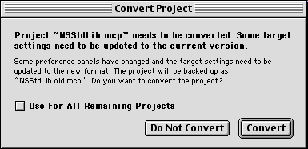
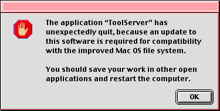
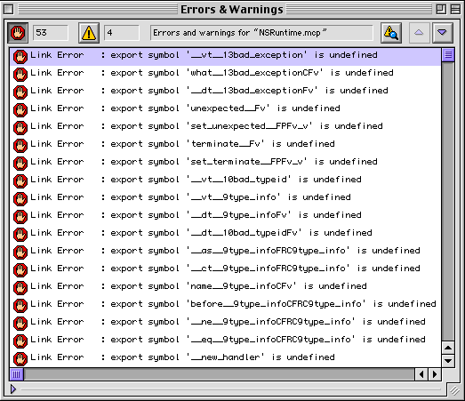
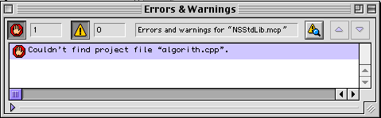
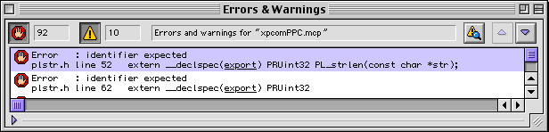
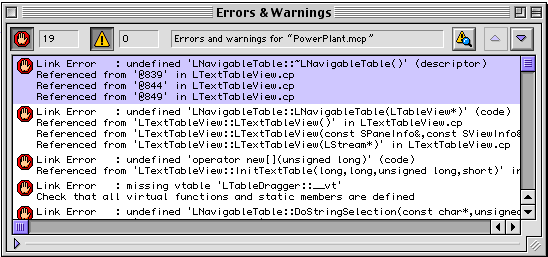
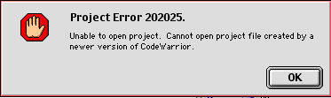

Due to a recent desire to surf the internet using my LCIII I went on a quest to find the best 68k browser I could download. Unfortunately for a 68k mac this ended up being a tossup between Internet Explorer 4.0 and Netscape Navigator 4.08.
The machine in Question? A clock chipped LCIII with 20 Mb of Ram and a SCSI2 SD replacement 4gb hard drive running 7.6.1.
| Internet Explorer 4.01 | Netscape Navigator 4.08 | |
|---|---|---|
| Speed (with images turned off) | Slow | Slower |
| CSS Support | Basic positioning | Non-existant |
| Website Compatibilty | Wont Even load most sites | Loads most sites |
| png images | Nope | Yep |
| Download | IE 4.01 68k | Netscape 4.08 68k |
In the end Even though Explorer offers a better layout engine and faster load times, I end up using netscape due to the fact that it seems to load anything eventually rather than failing most of the time. Would it be nice if we could just make it support SSL and speed it up a little?
Well maybe we can...
This is proved to be more difficult than I had expected. Finding the source was relatively easy. The march 31, 1998 release is available from mozilla in a source archive here: Mozilla Source Archive.
I downloaded the mozilla-19980331-mac.sit.bin file on my Macbook and then copied it into a SheepShaver Instance running Mac OS 9.0.4. The sheepshaver instance uncompressed it alright and then I found the build instructions located in the archive at "MacMozillaSource:Build Documentation:macbuild.htm" (Classic mac os paths are delimited by colons).
I've uploaded the build instructions here: macbuild.htm
The build instructions were longer than I expected, I had hoped for something that just had me running a few commands in MPW but it turns out Mozilla for classic mac os required CodeWarrior AND MPW to build. And the build is launched by its own executable. To make things worse, the source isn't even complete, it has almost a dozen dependencies that need to be obtained before it can be built...
I started by looking for a copy of codewarrior, Fortunately this was relatively easy to obtain, as the Macintosh Garden had both Codewarrior Pro 3 and Pro 4. After Installing Codewarrior 3 in Sheepshaver, I set out to download the dependancies described in the build instructions. Pretty much every link in macbuild.htm was broken, so it seems that most of these dependencies have long vanished from the internet. After several days of combing The Internet Archive and posting on Stack Exchnage: Retrocomputing I've been abe to obtain all the dependencies... But not all of the tools.... Here's what I've found.
In Short, this project is stalled until I can get ahold of a copy of the Develop 25 cd from apple... I'll try the 68k mla forums next... If anyone has it, post to the retrocomputing thread here.
Update: I managed to get ahold of the develop 26 cd on ebay, my understanding is that it should also contain all of the build tools that were supplied on the develop 25 cd, but we will see. It should arrive in about a week.
One of the guys on the 68kmla forums came through and got me not only ToolFrontEnd but everything that was Distributed with Develop 25. I've added the sit file as a link above.
I'm adding a table that documents what libraries I've been able to build. you can skip my rambling and just see what I've built and when I figured out how to build it.
| Library | Built On |
|---|---|
| :ns:lib:mac:NSRuntime:NSRuntime.mcp | 7/14 |
| :ns:cmd:macfe:restext:NavStringLibPPC.mcp | 7/14 |
| :ns:lib:mac:MoreFiles:build:MoreFilesPPC.prj | 7/14 |
| :ns:nsprpub:macbuild:NSPR20PPC.mcp | 7/14 |
| :ns:dbm:macbuild:DBMPPC.mcp | 7/14 |
| :ns:lib:mac:MacMemoryAllocator:MemAllocator.mcp | 7/14 |
| :ns:lib:mac:NSStdLib:NSStdLib.mcp | 7/14 |
| :ns:modules:security:freenav:macbuild:NoSecurity.mcp | 7/14 |
| :ns:xpcom:macbuild:xpcomPPC.mcp | 7/15 |
| :ns:lib:mac:PowerPlant:PowerPlant.mcp | |
| :ns:modules:zlib:macbuild:zlib.mcp | |
| :ns:jpeg:macbuild:JPEG.mcp | |
| :ns:sun-java:stubs:macbuild:JavaStubs.mcp | |
| :ns:js:jsj:macbuild:JSJ_PPC.mcp | |
| :ns:js:macbuild:JavaScriptPPC.mcp | |
| :ns:nav-java:stubs:macbuild:NavJavaStubs.mcp | |
| :ns:modules:rdf:macbuild:RDF.mcp | |
| :ns:modules:xml:macbuild:XML.mcp | |
| :ns:modules:libfont:macbuild:FontBroker.mcp | |
| :ns:modules:schedulr:macbuild:Schedulr.mcp | |
| :ns:cmd:macfe:projects:client:Navigator.mcp |
I began by using a trusty and stable Sheepshaver image that I keep around running Mac OS 9.0.4. I installed Codwarrior 3 Pro on a 1 Gb disk image and followed the instructions spelled out in macbuild.htm to a letter.
Next I started the build. The build process is an interesting one as I am used to opening up a project file and clicking build, but the guys at netscape created a much more involved build method. I assume their crazy build style has a lot to do with the speed of the available computers at the time. If you cut everything up into seperate modules and libraries that can be build seperately, you save compiling time.
Anyway, to build I needed to open up a folder
Mozilla Source:ns:cmd:macfe:projects:clientthis folder contained 4 text files that are basically manifests of a dozen or more codewarrior projects each. To build I would drag one of these text files onto an application called 'BuildList' in the parent directory. (I'm aiming for the ones that start with 'BuildNavPPC', because I'm not particularly interested in the extra mozilla features like composer.)
Once the build started it immediately hit me with this message and stopped.

It seems that Each and every project file is actually older than The version of Codewarrior 3 Pro that I'm running, so they will all need to be converted first. It seems that Netscape was probably using Codewarrior 2 Pro when they pushed this source code release. Hopefully this doesn't become too much of a problem. Converting the project files relatively painless, however I need to restart the build process from the very beginning each time I convert a project, as the window halts the build script in such a way that it cannot be resumed.
It turns out the instructions are a tad difficient in they sometimes skip steps such as moving dependencies out of subfolders before installing them. Most of the dependencies I used were the exact versions but a couple I was unable to obtain exact versions so I had to substitute. The biggest example of this is CWasteEdit I needed to rename the folder to have a date on the end before codewarrior. Fortunately all of these sorts of problems were easy to resolve as codewarrior gave me nice neat errors that told me the dependency, and the path it was expecting to find it at. I then just needed to determine why it wasn't where codewarrior expected it to be.
Another obversation is that the finder informs me after each project builds that ToolServer has Unexpectedly quit.

I think this is an indicator that the guys at netscape were not using HFS+ when they released the source code. Given the date It appears that Mac OS 8.1 has only been released days prior to the Mozilla source, and its probably safe to say that they weren't that eager to reformat their hard drives at the time.
Anyway, about 4 projects into the build I got stopped in my tracks.
Linker Errors...

It appears that the libraries provided with my version of codewarrior are perhaps deficient in some way... I'm not entirely certain however. In this case it appears that all of these undefined symbols are defined in a .exp file in the NSRuntime.mcp project. I'm going to go out on a limb and comment them out.
commenting out the references appears to have worked and left me with one build error:
#if __MWERKS__>=0x2020 ::operator delete[] ((char *)block-2*sizeof(size_t)); #else ::operator delete ((char *)block-2*sizeof(size_t)); #endifThe if portion of this preprocessor directive seems to have something to do with the version of codewarrior, I'm going to go out on a limb and assume it's referring to the wrong version of codewarrior and comment it out in favor of the else.... And that worked, that particular project now builds now off to start the build process again.
Several more projects built without issue, until I reached NSStdLib.mcp, and then another roadblock:

missing source code?!?! It appears that my version of codewarrior has a different metroworks standard library than the one used by the guys at netscape... I have a file called algorithm.cpp but not algorith.cpp... I'll try swapping it out for this project and see what happens.
and More Link Errors... from a .exp file. commenting them out seemed to work out okay last time so I'm going to try it again.... and that seemed to work, however i needed to add MallocUtils.c to the project file to get everything to build properly. onto the next build attempt...
After several more sucessful builds, i'm now stuck on xpcomPPC.mcp and I'm tired, so I'm going to call it a night.
Here's the error...
Okay Figured this one out, I found some codewarrior documentation here: C Compilers Reference 3.2 I needed to change 'export' to 'exportdll' in the file that defnes the macros. once doing this everything built without error. On to the next attempt...
next Roadblock? PowerPlant.mcp. It appears that I'm encountering numerous issues where my libraries from codewarrior are slightly different or something is slightly out of wack... I really should try building with Codewarrior 2 Pro... the problem is there are no copies of Codewarrior 2 Pro on ebay or Macintosh Garden. If anyone has a copy please contact me on 68kmla.org...
once again I've got linker errors...

I've decided to take another approach here. I've found a partial download of Codewarrior 2 Pro, and a complete download of Codewarrior 1 Pro... I'm going to create a new disk image and install Codewarrior 1, and then Drag the Codewarrior 2 files over top of the codewarrior 1 Files. From here I will start the build process again.
Well this attempt went nowhere fast...
